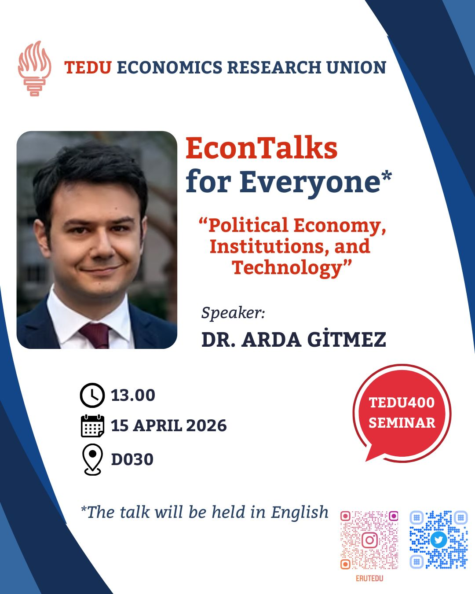

ERUMAG Issue 4
Consumerism, changing behavior, and contemporary economic questions.
Student-led economic dialogue
TEDU ERU brings together student publishing, seminars, interviews, and field conversations to make economic research accessible, current, and public-facing.
Built at TED University, connected to wider economic conversations through magazines, seminars, and recorded talks.

What We Do
Engage with the formats TEDU ERU uses to turn economic curiosity into public work.
Seminars, workshops, and conversations with economists, diplomats, and researchers.
Explore eventsOur flagship magazine featuring student-written analysis, interviews, and issue archives.
Browse the archiveConversations on climate, sustainability, and the economic dimensions of ecological change.
See GreenTalksRecorded talks and podcasts connecting policy, institutions, and economics in practice.
Watch FieldTalksOur Mission
We create accessible entry points into economic discussion for students across disciplines, then turn that curiosity into magazines, events, and public-facing analysis.
Learn More About Us
Spotlight
ERUMAG, seminars, and recorded talks operate as one ecosystem: ideas move from event rooms into editorial work and back into public discussion.
See the latest issue